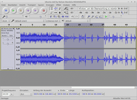

Audacity
Dieser Artikel wurde für die folgenden Ubuntu-Versionen getestet:
Ubuntu 17.10 Artful Aardvark
Ubuntu 16.04 Xenial Xerus
Ubuntu 14.04 Trusty Tahr
Zum Verständnis dieses Artikels sind folgende Seiten hilfreich:
Audacity  ist ein freier, kostenloser, leicht zu bedienender grafischer Audio-Editor/-Recorder für GNU/Linux, Windows, Mac OS X und andere Betriebssysteme. Die Hauptziele der Entwicklung waren Geschwindigkeit und Plattformunabhängigkeit. Audacity bietet eine Vielzahl von Nutzungsmöglichkeiten:
ist ein freier, kostenloser, leicht zu bedienender grafischer Audio-Editor/-Recorder für GNU/Linux, Windows, Mac OS X und andere Betriebssysteme. Die Hauptziele der Entwicklung waren Geschwindigkeit und Plattformunabhängigkeit. Audacity bietet eine Vielzahl von Nutzungsmöglichkeiten:
Audio-Liveaufnahme (Mikrofon, Line Input, USB/Firewire-Geräte und andere Quellen)
Digitalisierung von Kassetten und Schallplatten inkl. Löschen von statischen Hintergrundgeräuschen
Bearbeitung von Audiodateien in zahlreichen Formaten, z.B. Ogg/Vorbis-, MP3- und Wave-Dateien]
Import- und Exportfunktion der verschiedensten Audioformate ( z.B. WAV, AIFF, MP3, OGG...)
Audiodateien schneiden, kopieren und mischen
Änderung der Abspielgeschwindigkeit / Tonhöhe / Lautstärke einer Aufnahme
JACK-Unterstützung
Verwendung von Effekten wie z.B. Ändern von Tonhöhe oder Geschwindigkeit, Anpassen/Angleichen der Lautstärke, Optimierung der Klangqualität, Verzerren und viele andere, auch im Stapelverarbeitungs-Modus (Effekt-"Ketten") über mehrere Dateien hinweg.
und vieles mehr
Zur Aufnahme von Internetradio-Sendungen sollte man dagegen ein darauf spezialisiertes Programm nehmen. Ansonsten hat das Programm nur einen ernsthaften Konkurrenten: ocenaudio.
Installation¶
Folgendes Paket wird für die Installation [1] benötigt :
audacity (universe)
 mit apturl
mit apturl
Paketliste zum Kopieren:
sudo apt-get install audacity
sudo aptitude install audacity
Um die Metadaten (Tags) in den generierten Dateien bearbeiten zu können, wird z.B. eines der folgenden Programme vorausgesetzt:
easytag (universe, siehe EasyTAG)
mit apturl
Paketliste zum Kopieren:
sudo apt-get install easytag
sudo aptitude install easytag
oder für KDE z.B.:
kid3 (universe, siehe Kid3)
mit apturl
Paketliste zum Kopieren:
sudo apt-get install kid3
sudo aptitude install kid3
Weiterführende Hinweise zu Tag-Editoren gibt es unter unter Multimedia.
Benutzung¶

Ansichtsoptionen¶
Die optische Darstellung der neu erstellten oder aufgenommenen Tonspuren im Programm kann im Menü "Ansicht" verändert werden. Z.B. komprimiert Strg + 3 die Zeitleiste, während Strg + 1 sie ausdehnt.
Aufnahme¶
Aufnahme von einer externen Quelle¶
Soll das Programm zur Aufnahme einer Audioquelle genutzt werden, wählt man dies aus, indem man z.B. die ursprüngliche Quelle anklickt und im aufklappenden Listenfeld die gewünschte Quelle auswählt, z.B. den LineIn-Eingang oder das Mikrofon. Dadurch ist es unter anderem möglich, Aufnahmen alter LPs ins moderne Zeitalter zu retten. Vor Beginn der Aufnahme kann ebenfalls noch über das Menü "Bearbeiten -> Einstellungen -> Qualität" die Samplefrequenz (z.B. für CD-Qualität 44100Hz) sowie das Standard-Sampleformat (z.B. 16, 24 oder 32bit) ausgewählt werden.
Die Aufnahme selbst wird im Hauptfenster mit dem roten Aufnahmeknopf (alternativ Taste R drücken) gestartet. Die Aufnahmelautstärke kann mittels des Reglers angepasst werden.
Sollte keine Audioquelle auswählbar sein, muss noch das Paket:
pavucontrol (universe)
mit apturl
Paketliste zum Kopieren:
sudo apt-get install pavucontrol
sudo aptitude install pavucontrol
installiert werden. Zu den Details siehe Pulseaudio
Aufnahme der aktuellen analogen Ausgabe der Soundkarte¶
Hierbei geht es darum, den Sound, der aus dem Ausgang der Soundkarte kommt, aufzunehmen. Man kann so alles aufnehmen, was man über die Lautsprecher mit dem PC hört (CDs, den Sound eines Videos, Internetradio usw.). Durch den Umweg digital-analog-digital geht aber etwas an Qualität verloren und die Aufnahme geht nur "in Echtzeit".
Für diese „what you hear“-Aufnahmen ist es empfehlenswert, PulseAudio zu benutzen: Siehe siehe dazu den Abschnitt Verwendung mit PulseAudio und den Artikel Pulseaudio
Sobald der Aufnahmeknopf gedrückt wird, wird der aktuelle Soundausgang der Soundkarte aufgezeichnet. Drückt man erst "Pause" und dann den "Aufnahme" Knopf, wird die Aufnahme erst gestartet, wenn man den Pause-Knopf noch einmal betätigt. So lässt sich die Aussteuerung (Lautstärke) einstellen, bevor die Aufnahme beginnt. Die Aufnahmekapazität wird im Audacity-Fenster ganz unten als "verbleibende Restzeit für Aufnahme" angezeigt und hängt vom freien Speicherplatz auf der Festplatte ab.
Nach der Aufnahme kann das aufgenommene Audioprojekt über den Menüpunkt "Datei -> Projekt Speichern/Speichern unter" im Audacity eigenen Projekt-Format .aup (Audacity-Projekt) abgespeichert werden (Hinweis: dieses Format kann nur von Audacity selbst geöffnet/abgespielt werden) oder im Menü über "Datei -> Exportieren" in ein anderes gewünschtes Dateiformat, z.B. OGG oder MP3, exportiert werden. Siehe auch die Abschnitte Import/Export sowie Umwandeln dieses Artikels.
Timergesteuerte Aufnahme¶
Über das Menü "Transport -> Zeitgesteuerte Aufnahme" kann eine Zeitschaltuhr programmiert werden. Es lassen sich der Beginn der Aufnahme (Datum und sekundengenaue Uhrzeit) sowie die sekundengenaue Aufnahmedauer oder der Zeitpunkt des Aufnahmeendes präzise festlegen.
Audiospuren¶
Audacity ist ein leistungsfähiges Programm. Mittels der Spuren kann man beispielsweise folgendes erreichen:
Aus Mono-Aufnahmen Pseudo-Stereofonie erzeugen
Musikstücke können gemischt werden, z.B. einen Audiokommentar mit einem geeigneten Lied untermalen
Die Samplerate sowie das Sampleformat kann geändert werden (über das links am Beginn der Audiospur gelegene Aufklappmenü "Tonspur")
Es gibt viele weitere Möglichkeiten - hier gilt: ausprobieren.
Bearbeiten¶
Allgemeine Bearbeitungsmöglichkeiten¶
| Zu bearbeitende Passage mit linker Maustaste markieren (drücken und halten), dann: | |||
| Gewünschte Bearbeitungsaktion | Erreichbarkeit der Funktion über Menü | Tastenkürzel | Erläuterung |
| Passage löschen | "Bearbeiten -> Audio entfernen -> Löschen" | Strg + K oder Entf drücken | Bereich löschen, Restspur zusammenführen |
| Passage löschen und Spurteile trennen | "Bearbeiten -> Audio entfernen -> Löschen und trennen" | Strg + K | Bereich löschen, Zeitbereich ungefüllt lassen |
| Passage ausschneiden (löschen und in Zwischenspeicher ablegen) | "Bearbeiten -> Audio entfernen -> Ausschneiden" | Strg + X | Bereich löschen und in Zwischenspeicher ablegen, Restspur zusammenführen |
| Passage ausschneiden (löschen und in Zwischenspeicher ablegen) und Spurteile trennen | "Bearbeiten -> Audio entfernen -> Ausschneiden und trennen" | Strg + Alt + X | Bereich löschen und in Zwischenspeicher ablegen, Zeitbereich ungefüllt lassen |
| Passage aus Zwischenspeicher einfügen | "Bearbeiten -> Einfügen" | Strg + V | in Zwischenspeicher abgelegten Bereich an Cursorposition einfügen |
| Passage in neue Tonspur verschieben | "Bearbeiten -> Clip bearbeiten -> In neue Tonspur verschieben" | Strg + Alt + I | Bereich wird ausgeschnitten, Zeitbereich wird ungefüllt gelassen, ausgeschnittener Bereich wird in neue Tonspur eingefügt |
| Passage in Stille umwandeln | "Bearbeiten -> Audio entfernen -> Auswahl in Stille umwandeln" | Strg + L | markierten Bereich in Stille umwandeln |
| Trimmen | "Bearbeiten -> Audio entfernen -> Trimmen" | Strg + T | nicht markierte Bereiche löschen |
Bearbeitung mittels Hüllkurve¶
Die Bearbeitungsfunktion mittels Hüllkurve erlaubt beispielsweise ein sanftes Ein- und Ausblenden. Man klickt auf den Button "Hüllkurvenwerkzeug" und erzielt eine bereichsweise Veränderung der Dynamik durch Anklicken und vertikales Verschieben der angezeigten dicken blauen Linien mit Hilfe der linken Maustaste. Durch mehrfaches Anklicken der blauen Hüllkurvenlinie an verschiedenen Stellen lassen sich mehrere Knotenpunkte festlegen.
Tonerzeugung¶
Audacity kann verschiedenerlei Sounds generieren und diese an angewählter Position in einem Projekt einfügen oder mit ihnen einen markierten Bereich ersetzen.
| Die Tongenerierung ist erreichbar über das Menü "Erzeugen": | ||
| Art der Tongenerierung | Erläuterung | Einstellmöglichkeiten |
| Mehrfrequenz-Töne | Umwandlung einer Buchstabenfolge in eine Tonfolge des Mehrfrequenzwahlverfahrens | Amplitude, Dauer und Verhältnis Ton/Stille einstellbar |
| Rauschen | Erzeugung von weißem, rosa und braunem Rauschen | Amplitude und Dauer einstellbar |
| Stille | Generierung eines mit Stille gefüllten Bereichs | Dauer einstellbar |
| Tongeneratoren | Generierung von Sinus-, Rechteck- und Sägezahnkurven | Amplitude, Dauer und Frequenz einstellbar |
| Click Track | metronomartige Klicks erzeugen | zahlreiche Einstellmöglichkeiten |
| Pluck | gitarrenartige Zupftöne mit Nachklang erzeugen | zahlreiche Einstellmöglichkeiten |
| Risset drum | produziert einen glockenartigen, nachklingenden Sound, welcher auf einer Arbeit des Komponisten elektronischer Musik Jean Claude Risset basiert | zahlreiche Einstellmöglichkeiten |
Effekte¶
Audacity stellt dem Benutzer eine Vielzahl von Effekten zur Verfügung, um z.B. Mitschnitte eines Radiostreams oder Aufnahmen von einer LP zu bearbeiten. Unerwünschte Stellen (Werbung, Sprache) können gelöscht, die Lautstärke normalisiert, das Rauschen entfernt oder in die jeweilige Datei ein-/ausgeblendet werden...
Effekte werden angewendet, indem man den zu bearbeitenden Abschnitt des Audioprojekts per Maus markiert und über den Menüpunkt "Effekt" den entsprechend gewünschten Effekt auswählt. Teilweise stehen dann anschließend in einem aufklappenden Fenster noch weitere Einstellungsmöglichkeiten, teilweise mit Vorhör-Möglichkeit, zur Verfügung.
Hinweis:
Angewendete Effekte lassen sich, solange die Originaldatei nicht explizit überschrieben wird, in der Abfolge der Bearbeitungsschritte über "Bearbeiten -> Rückgängig" (alternativ Strg + Z ) zurücknehmen, ohne dass die Ausgangsdatei verändert wird.
Durchführung: Zu bearbeitende Passage mit linker Maustaste markieren (drücken und halten), dann Effekt anwenden.
| Auswahl einiger Effekte | |
| Art des Effekts | Erläuterung |
| Einblenden | aus Null-Level |
| Ausblenden | nach Null-Level |
| Bass-Verstärkung | Frequenz und Dynamik einstellbar |
| Echo | Verzögerung und Dämpfung einstellbar |
| Equalizer | verschiedene vorprogrammierte Kurven sowie Erstellung eigener Kurven |
| Klick-Filter | Verbesserung der Aufnahmequalität durch Entfernung störender Klickgeräusche |
| Normalisieren | Verstärkung/Abschwächung der Dynamik des Bereichs, so dass der größte dynamische Absolutwert an einen gewählten Maximalwert angeglichen wird. |
| Rauschentfernung | Verbesserung der Aufnahmequalität in zwei Schritten: Ermittlung des störenden Grundrauschens und anschließendes Herausfiltern desselben |
| Reparieren | automatische Reparatur von Aufnahmefehlern, kann nur auf sehr kurze Bereiche von max. 128 Samples angewendet werden |
| Rückwärts | Bereich spiegeln, so dass er rückwärts abgespielt wird |
| Stille entfernen | Bereiche von vielfältig definierbarer Stille entfernen |
| Tempo ändern | ohne Änderung der Tonhöhe |
| Tempo/Tonhöhe ändern | mit der Geschwindigkeit ändert sich gleichzeitig die Tonhöhe, wie beim Verändern der Abspielgeschwindigkeit bei einer herkömmlichen Schallplatte |
| Tempo/Tonhöhe gleitend ändern | Tempo/Tonhöhe am Anfang und am Ende des zu bearbeitenden Bereichs einstellbar |
| Verstärken | Erhöhung oder Verringerung der Dynamik (in dB einstellbar) |
| Wahwah | Simulation des Wahwah-Effekts, der ursprünglich bei Blechblasinstrumenten durch Verwendung eines Plunger-Dämpfers generiert wird |
| Wiederholen | mehrfache Wiederholung der Passage einbauen |
und andere.
Erweiterungen¶
Audacity lässt sich mit Plugins (u. a. LADSPA-Plugins) erweitern. Eine Liste der unterstützten Plugin-Systeme ist auf der Projektseite zu finden. Beispiele sind Kreuzschnittwerkzeuge, Passfilter, Tremoli und viele mehr.
Stapelverarbeitung¶
Mithilfe der Stapelverarbeitungsfunktion lassen sich ein in Audacity geöffnetes Projekt oder mehrere externe Audiodateien bequem und automatisch mithilfe programmierbarer, vordefinierter Arbeitsschritte bearbeiten.
"Stapelverarbeitung eines Projekts":
Zunächst wird ein Projekt geladen oder erstellt und dann abgespeichert.
Über Menü "Datei -> Stapelverarbeitung bearbeiten" kann eine Stapelverarbeitungskette hinzugefügt und individuell programmiert oder eine vorhandene Kette bearbeitet werden. Das Fenster anschließend mit OK schließen.
Durch Anwählen von "Datei -> Stapelverarbeitung anwenden" kann nun die gewünschte Stapelverarbeitung ausgewählt werden, welche dann automatisch durchläuft. Die verarbeitete Ergebnis-Datei speichert Audacity im Ordner "cleaned" ab, welchen das Programm als Unterordner zum Quellverzeichnis des Projekts anlegt.
"Stapelverarbeitung einer oder mehrerer Audiodateien":
Hinweis:
Es darf kein aktuelles Projekt geladen sein. Sollte dies dennoch der Fall sein, fordert Audacity zum Schließen desselben auf.
Über Menü "Datei -> Stapelverarbeitung bearbeiten" kann eine Stapelverarbeitungskette hinzugefügt und individuell programmiert oder eine vorhandene Kette bearbeitet werden. Das Fenster anschließend mit "OK" schließen.
Durch Anwählen von "Datei -> Stapelverarbeitung anwenden" kann nun die gewünschte Stapelverarbeitungskette ausgewählt werden, anschließend über Schaltfläche "Auf Dateien anwenden" die gewünschten zu verarbeitenden Dateien auswählen. Die Stapelverarbeitung läuft dann automatisch durch. Die verarbeitete(n) Ergebnis-Datei(en) speichert Audacity auch in diesem Fall im Unterordner cleaned ab, der als Unterordner im Quellverzeichnis der Originaldatei(en) angelegt wird.
Frequenzanalyse¶
Mithilfe des Menüpunktes "Analyse -> Frequenzanalyse" lässt sich eine umfangreiche Frequenzanalyse (Sonagramm) einer geöffneten Audiodatei mit zahlreichen Funktionen und Algorithmen durchführen.
Import/Export¶
Audacity kann Audiodateien der Formaten WAV, AIFF, AU, FLAC und OGG/Vorbis importieren und exportieren. Mithilfe entsprechender Bibliotheken lassen sich zudem Audiodateien der Formate MPEG (inklusive MP2 und MP3), AC3, M4A/M4R (AAC) und WMA importieren und exportieren. Bei einigen Dateiformaten lassen sich im Rahmen des Dateiexports Einstellungsoptionen wie Bitraten und Exportqualität auswählen. Außerdem lassen sich externe Kodierer einbinden, siehe z.B. bei Opus.
ID3-Tag¶
Sofern man ein Projekt als MP3 abspeichert, öffnet sich ein Fenster, in dem man die gewünschten Metadaten (Zusatzinformationen) als ID3v2 abspeichern kann. Alternativ kann man diese Option unter "Datei -> Metadaten-Editor..." aufrufen.
Umwandeln¶
Audiodateien umwandeln¶
Um einzelne Audiodateien mittels Audacity umzuwandeln, lädt man die gewünschte Datei "Datei -> Öffnen..." und exportiert diese ins gewünschte Endformat: "Datei -> Exportieren...". Dies empfiehlt sich jedoch nur bei einzelnen Dateien. Beim Exportieren in MP3 muss wie oben beschrieben vorher LAME installiert werden. Audacity unterstützt nur die Dateiformate OGG/Vorbis, MP3, WAV, FLAC, AIFF, AU und CAF. Soll eine WMA-Datei bearbeitet werden, muss diese vorher in ein unterstütztes Format umgewandelt werden.
Das Programm gestattet es ebenfalls, einen markierten Bereich zu exportieren. Dies erweist sich als nützliches Feature, wenn man z.B. Mitschnitte eines Radiostreams bearbeiten möchte. Hier kann man die Lieder einzeln im gewünschten Zielformat abspeichern: "Datei -> Auswahl exportieren..."
Video-Tonspuren extrahieren und umwandeln¶
Audacity kann die Tonspuren beispielsweise von .flv-, .mp4- und .wmv-Videos extrahieren, welche dann als Audiodatei abgespeichert werden können.
"Datei -> Import -> Audio" (alternativ: ⇧ + Strg + I ); Datei auswählen und importieren lassen
danach "Datei -> Exportieren" -> z.B. als MP3
Midi¶
Midi-Bearbeitung¶
Audacity bietet lediglich rudimentäre Bearbeitungsmöglichkeiten für Midi-Dateien. Diese lassen sich über das Menü "Datei -> Import -> Midi" in das Programm importieren. Ein Abspielen der importierten Midi-Datei ist im Augenblick nicht möglich.
Die Midi-Datei oder Abschnitte daraus lassen sich nun mithilfe der Maus markieren und einfache Bearbeitungsschritte wie Löschen oder Ausschneiden und Einfügen an Cursorposition (siehe Artikelabschnitt "Allgemeine Bearbeitungsmöglichkeiten") darauf anwenden. Eine markierte Midi-Datei lässt sich mithilfe des Mauszeigers an den eingezeichneten Koordinatenkreuzen (Mauszeiger verwandelt sich in ein Fadenkreuz) in grober Weise stauchen und dehnen, wodurch sich Abspielgeschwindigkeit und Gesamtabspieldauer verändern lassen. Die bearbeitete Midi-Datei lässt sich über "Datei -> Midi exportieren" wieder als Midi-Datei abspeichern.
Weitergehendere Bearbeitungsmöglichkeiten für Midi-Dateien sind für spätere Audacity-Versionen vorgesehen.
Umwandeln von Midi-Dateien in ein Audioformat¶
Mithilfe der im Artikelabschnitt "Aufnahme der aktuellen analogen Ausgabe der Soundkarte" beschriebenen Methode lässt sich eine in einem externen Midi-Abpielprogramm abgespielte Midi-Datei mit Audacity aufnehmen. Die entstandenen Audiodatei lässt sich normal weiterverarbeiten und anschließend in ein Audioformat eigener Wahl exportieren (siehe Artikelabschnitt "Import/Export").
Weitere Bedienungshinweise¶
Bedeutung der Symbole¶
| Kurzbeschreibung | |||
| Werkzeuge: | |||
| Auswahlwerkzeug | Hüllkurvenwerkzeug | ||
| Zeichenwerkzeug | Zoomwerkzeug | ||
 | Zeitverschiebungswerkzeug | Multifunktionswerkzeug | |
| Ansicht: | |||
| Ansicht vergrößern. | Ansicht verringern. | ||
| Auswahl ins Fenster einpassen. | Projekt einpassen. | ||
| Zwischenablage: | |||
| Schneidet den markierten Bereich aus. | Kopiert den ausgewählten Bereich in die Zwischenablage. | ||
| Fügt die Zwischenablage an der gewünschten Stelle ein. | Der markierte Bereich wird gewählt - der Rest entfernt. | ||
| Aktion rückgängig machen. | Aktion wiederholen. | ||
Standard-Tastenkürzel¶
Audacity lässt sich auch recht einfach durch voreingestellte und individuell anpassbare Tastenkürzel steuern. Diese sind im Menü "Bearbeiten -> Einstellungen -> Tastatur" aufgeführt und einstellbar.
Problembehebung¶
Verbleibende Restzeit für Aufnahme¶
Um jederzeit Schritte rückgängig zu machen, speichert Audacity Aufnahmen temporär ab. Dadurch verringert sich die verbleibende Restzeit und erhöht sich auch nicht, wenn eine aufgenommene Datei gelöscht wurde. Um die Daten zu löschen, über "Ansicht -> Verlauf" alle Aufnahmeschritte rückgängig machen (einfach auf den ersten Eintrag ganz ober in der Liste klicken und dann auf "OK" klicken). Dabei werden auch temporäre Daten gelöscht und Audacity sollte wieder genug Platz haben.
Verwendung mit PulseAudio¶
Die Voreinstellungen für PulseAudio können üblicherweise so belassen werden. Mitunter kann es vorkommen, dass eine Aufnahme mittendrin abbricht. Das kann entweder mit dem Starten des Bildschirmschoners bzw. Energiesparmodus zusammenhängen oder mit den Einstellungen für das Aufnahmegerät. Bei Änderungen hier muss das Programm neu gestartet werden, um diese wirksam werden zu lassen.
Standardeinstellungen sind:
Host: "ALSA"
Wiedergabe-Gerät: "default"
Aufnahme-Gerät: "default"
2-Kanal-Stereo
Gegebenenfalls muss das Aufnahmegerät angepasst werden.
Störgeräusche mit ALSA¶
Wenn man ALSA verwendet und beim Aufnehmen Störgeräusche wie zum Beispiel ein Knacksen alle paar Sekunden in der Line hat, hilft es, das ALSA-Remixing zu unterlaufen, indem man die Sample-Rate im Audacity Hauptfenster auf "48000 Hz" umstellt.
Fehler beim Öffnen des Audiogeräts¶
Sollte man eine Fehlermeldung mit dem Text:
"Fehler beim Öffnen des Audiogerätes. Bitte überprüfen Sie die Einstellungen für das Audiogerät und die im Projekt eingestellte Abtastrate (Samplefrequenz)"
bekommen, so muss man die Abtastrate des Projektes (unten links im Audacity-Fenster) verändern. Der Standard 44100 Hz wird von einigen digitalen Soundkarten nicht unterstützt und man muss 48000 Hz einstellen. Um die Änderung dauerhaft und für alle Projekte zu übernehmen, muss man diese Einstellung auch unter "Bearbeiten -> Einstellungen" im Reiter "Qualität" anpassen.
Links¶
Musik von Gesang befreien (Karaokeversionen erstellen)
- Blogbeitrag 05/2010Tonstudio
 Programmübersicht
Programmübersicht


- Erstellt mit Inyoka
-
 2004 – 2017 ubuntuusers.de • Einige Rechte vorbehalten
2004 – 2017 ubuntuusers.de • Einige Rechte vorbehalten
Lizenz • Kontakt • Datenschutz • Impressum • Serverstatus -
Serverhousing gespendet von